Tutorial by Abhay Bhavsar, Oracle
Mar 2019, Oracle Digital Assistant version 19.1.3
Before You Begin
This 45-minute tutorial shows you how to use Insights to find out issues with your skills deployed on Oracle Digital Assistant. It also helps you identify and fix issues in your skill's understanding. For example, using the retrainer you can find unresolved phrase, see recommendations of their closest predictions and train the skill to handle those user messages by retraining intents with the new phrases.
Background
Below is a typical Insights Report. The Overview tab gives an insight into how the skill is performing. For example completed versus incompleted conversations and what were the top resolved intents.
Download the starter skill XX_CrcPizzaSkill from here
With the Oracle Digital Assistant UI open in your browser, click to open the side menu.
Expand Development and then click Skills.
Import the XX_CrcPizzaSkill into the Oracle Digital Assistant instance using the button. If the skill already exists you can skip this step or delete it and re-import it.
Within the tile for the XX_CrcPizzaSkill skill, click , select Clone, and name the clone <Your_Unique_Initials>_CrcPizzaSkill
Open the <Your_Unique_Initials>_CrcPizzaSkill Skill and observe the intent and the utterances.
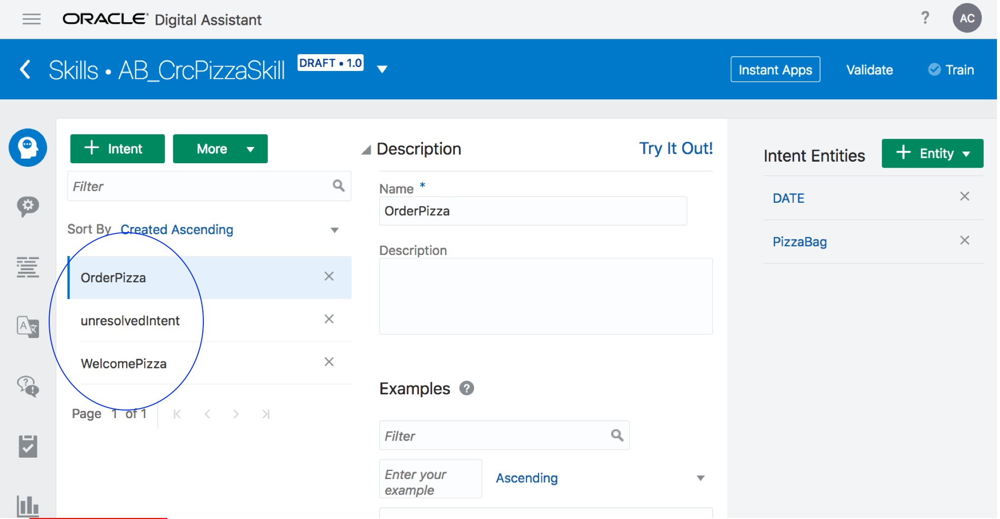
Intents & Utterances
Click on Settings in the left nav bar and ensure Enable Insights is selected as shown in the figure below.
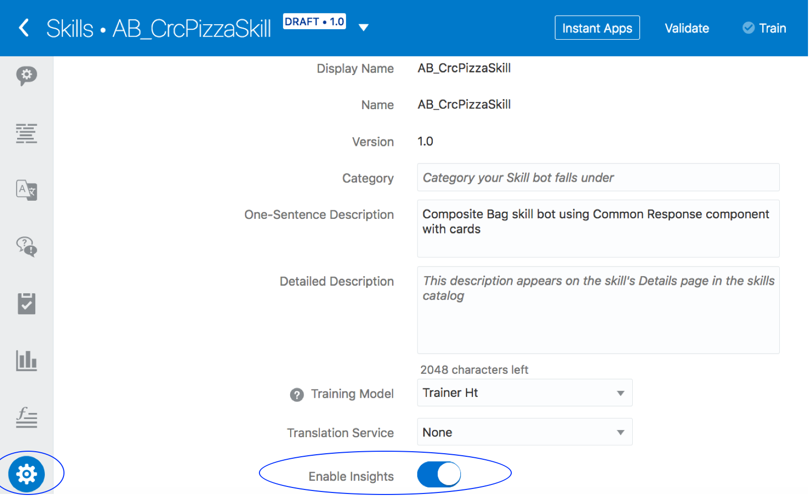
Enable Insights
Click on validate followed by Train to ensure the skill is ready.
Basic Conversation Insights
You are now going to use Insights to understand how the user interacted with the skill and in particular, whether particular conversations with the skill resulted in the successful ordering or a pizza or not.
Creating a conversation
First of all we need to have a few conversations with the skill in order for us to generate some insight data.
Go to Insights as shown in the figure below. Notice that there are no conversations since the skill has just been imported and no conversations have taken place yet.
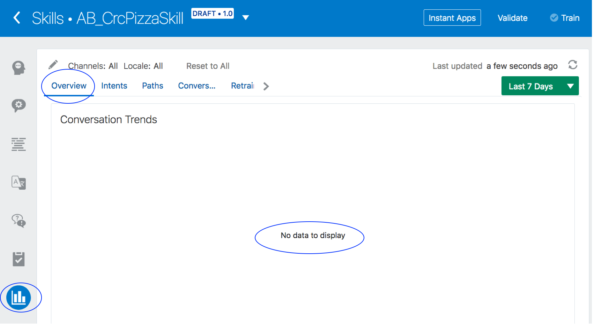
View Insights
Open the Tester in the left navbar. This will open a dialog. Start a conversation by entering a simple Hi and see the skill response. The idea is to start a simple welcome conversation and observe this within Insights.
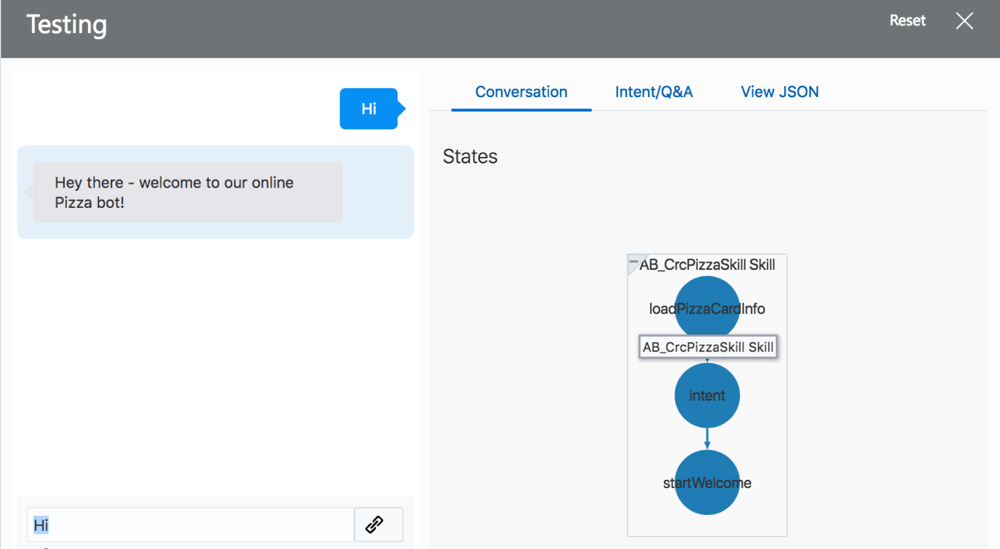
Test the skill
Click on the icon to close the tester window.
Click on Insights as shown in the figure below. You will see the Insights Overview report. It may take a few seconds for the report to be refreshed. Notice that the WelcomePizza intent is displayed with a single conversation.
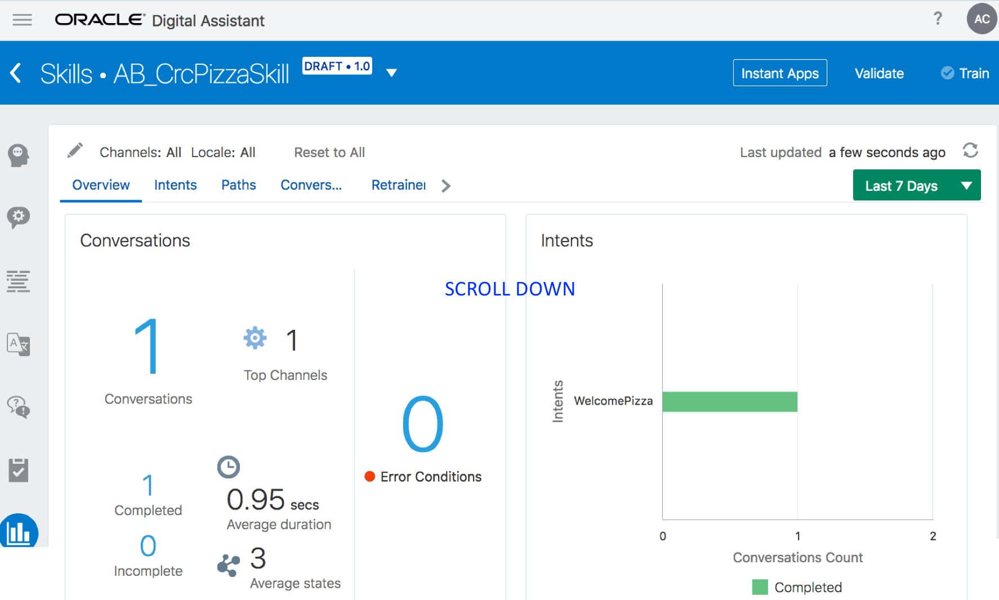
Insights Overview report
Now go back to the tester dialog window and enter "Can you order pasta for me". Notice that ordering pasta is not a function the skill supports although it did respond approriately.
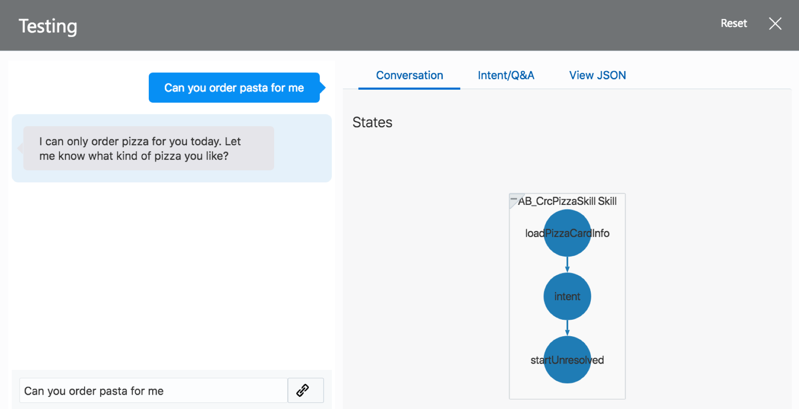
unresolvedIntent report
Click on the 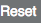 button on the tester and enter "I would like to order a pizza". Continue the conversation following the screenshot and enter the information as shown until the skill replies that it has placed an order for a pizza.
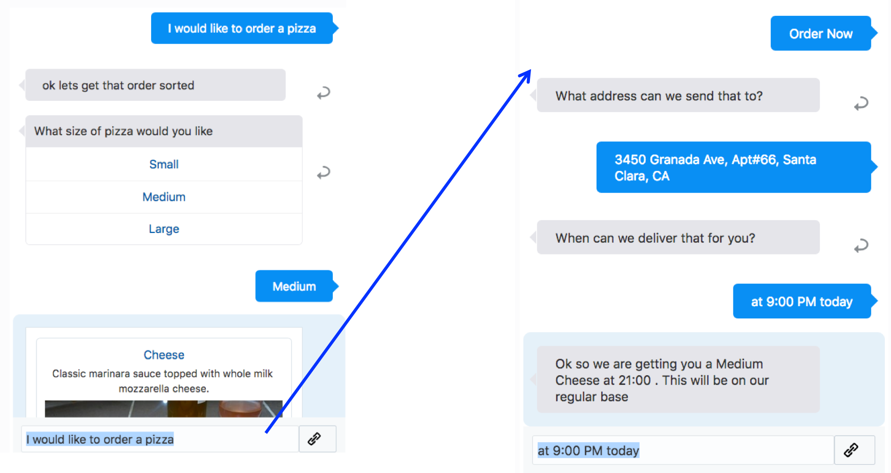
Order a pizza
Click Close to close the tester
Click Insights from the left navbar to view the Insights report and notice that there are 3 conversations. Note that if you have already gone through multiple conversations as per your testing, you will find more conversations reported on the Insights report.
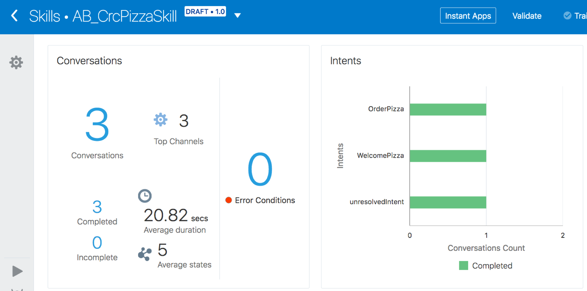
Insights report showing 3 conversations
Now go back to the tester and start with a pizza order but when a list of pizzas are shown, do not select but rather enter each of the following sentences, one after the other.
that's not what I am looking for
need something special actually
how about a sandwich
You will notice that the skill shows that it is not able to place an order.
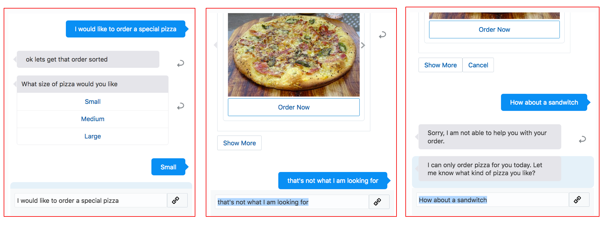
Failed conversation
Click Close to close the tester
Using Insights to understand a conversation
Now that you have some conversations, let's use Insights to understand how well the skill managed those conversations and whether we identified any problems the user may have had.
Click Insights from the left navbar
Now observe the Insights overview report. Note that you will find 4 completed conversations even though the last conversation did not result in placement of an order. At this time, the insight report doesn't differentiate between a conversation which completes with an order, and a conversation that completes through the skill handling incorrect input. To better understand these differences we have to drill down further.
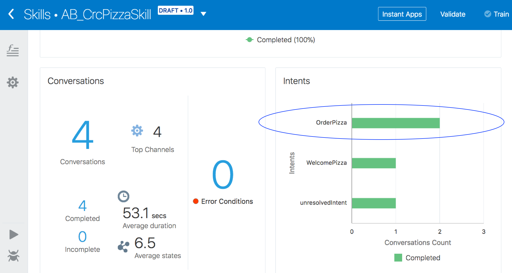
Insights overview of conversations so far
Click on the Conversations tab and notice the 2 completed conversations for intent OrderPizza. You will notice that both are shown as completed but only one resulted in placement of an order. So now you can at least see that there might have been different outcomes for those conversations.
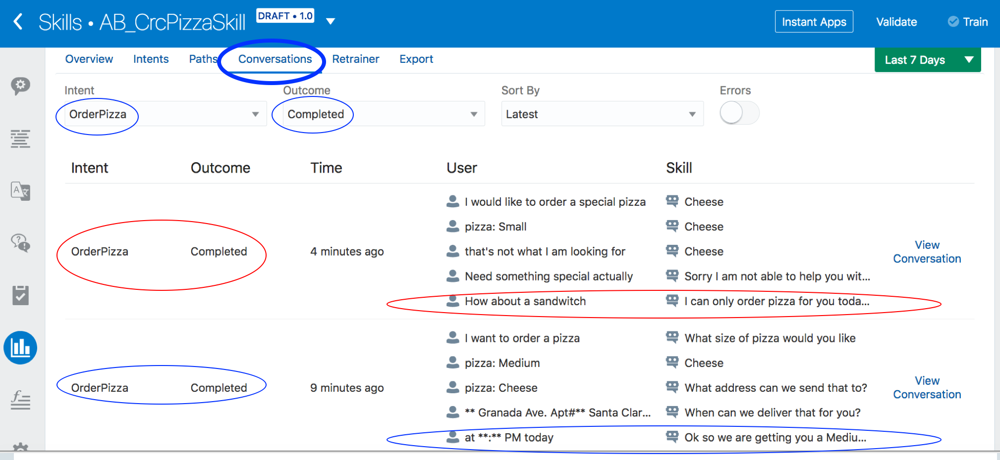
Completed conversations
Go to Paths. Select OrderPizza as Intent and Completed for Outcome. Select showPizzaOrder as the Final State. You will see only one completed conversations that ended with showPizzaOrder.
So you now have further insight that only one of the OrderPizza conversations actually resulting in the showing of the completed order.
In the same screen, for Final State select startUnresolved.
You will notice that there is one completed conversation that ended with state startUnresolved. Also observe that the flow went into an state named maxError - this identifies a conversation which could not capture relevant information from the end user and hence exited the conversation only to go to a state in the conversation which indicated the order was not completed.
Visit the dialog flow BotML and locate the state startUnresolved. Notice that there is a return transition. This marks the conversation complete. This explains why a conversation is shown as completed even though it did not result in placement of an order.
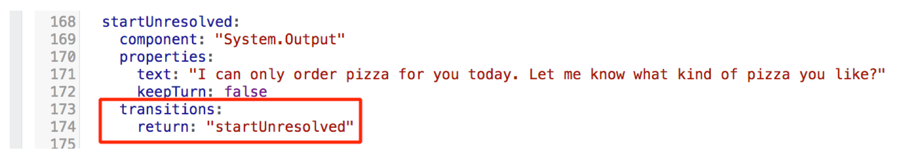
Return marks a conversation complete
Insight Into Unresolved Phrases
Let's now use Insights to understand if the skill failed to understand user input and whether the skills developer can use the Retrainer tool to train the skill to better understand the user.
Click the Skill Tester in the left navbar
Click on the Reset button.
In the chat window, enter My daughter likes a thin crust
Click on Insights from the left navbar then Intents and then click on unresolveIntent item from the list on the left as shown in the figure below. Click on the OrderPizza intent on the graph.
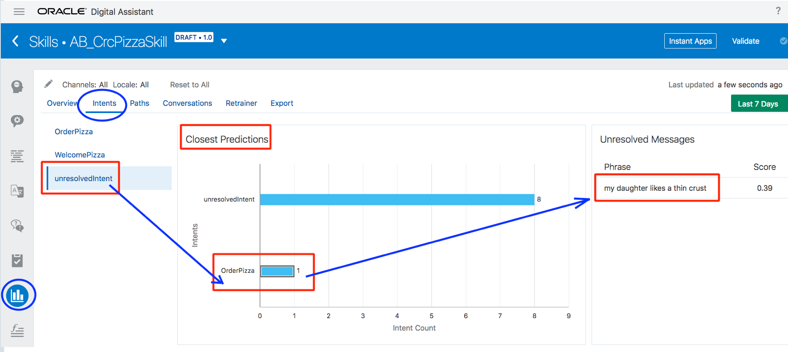
Figure 18: Observe the closest prediction i.e. the OrderPizza intent.
The skill's current confidence threshold is 0.40. It seems the utterance you entered just missed the OrderPizza intent. Note that depending on your utterances and version of the Oracle Digital Assistant this figure may vary.
Click the Skill Tester in the left navbar
Enter the following utterances one after the other. Ensure that you click on the Reset button after entering every utterance.
order a thin crust large one with extra mushrooms
order a pepperoni with extra Olives
A regular pan size with tomatoes
Order for me a regular pan size veggy
In doing this you are supplying utterances to the skill which the skill is going to have trouble understanding.
Congratulations! You have completed an introduction to Insights. You noticed that a return transition is required to mark a conversation as complete. You also used the Retrainer capability to find utterances that did not match the OrderPizza intent and then added those, retrained the skill and verified.
 Oracle Digital Assistant Insights
Oracle Digital Assistant Insights Before You Begin
Before You Begin Download And Clone The Starter Skill
Download And Clone The Starter Skill to open the side menu.
to open the side menu. button. If the skill already exists you can skip this step or delete it and re-import it.
button. If the skill already exists you can skip this step or delete it and re-import it. , select Clone, and name the clone <Your_Unique_Initials>_CrcPizzaSkill
, select Clone, and name the clone <Your_Unique_Initials>_CrcPizzaSkill Basic Conversation Insights
Basic Conversation Insights Insight Into Unresolved Phrases
Insight Into Unresolved Phrases